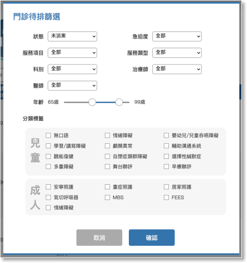

01-1-1 門診待排篩選

項目

內容

說明

狀態

下拉選項預設未派案

下拉選項
- 全部
- 未派案
- 已派案

急迫/嚴重度

下拉選項預設為全部

下拉選項
- 全部
- 紅燈
- 黃燈
- 綠燈
- 灰燈

服務項目

下拉選項預設為全部

待排名單中有主服務的選項
- 全部
- 治療
- 評估
- 檢查
- MBS
- FEES

服務類型

下拉選項預設為全部

下拉選項
- 全部
- 溝通
- 吞嚥
- 溝通＋吞嚥

科別

下拉選項預設為全部

對應待排名單的醫師科別
- 全部
- 科別名稱
治療師
下拉選項預設為全部
下拉選項
- 全部
- 所有語言治療師姓名
- 未指定
醫師
下拉選項預設為全部
對應待排名單的醫師
- 全部
- 醫師代碼及姓名
- 未指定

年齡

雙節點滑桿元件
RangeSlider

左右點的控制連動年齡起迄的數字，預設0～125
分類標籤
多選項
checkbox
專業標籤分為兒童及成人兩個頁籤，篩選時可多選，篩選判斷為 AND：
- 兒童：
- 舞台聯評
- 早療聯評
- 嬰幼兒/兒童吞嚥障礙
- 無口語
- 自閉症類群障礙
- 選擇性緘默症
- 學習/讀寫障礙
- 輔助溝通系統
- 聽能復健
- 顱顏異常
- 多重障礙
- 情緒障礙
- 重症照護
- 氣切呼吸器
- 安寧照護
- 居家照護
- MBS
- FEES
- 成人：
- 無口語
- 自閉症類群障礙
- 選擇性緘默症
- 學習/讀寫障礙
- 輔助溝通系統
- 聽能復健
- 顱顏異常
- 多重障礙
- 情緒障礙
- 重症照護
- 氣切呼吸器
- 安寧照護
- 居家照護
- MBS
- FEES
